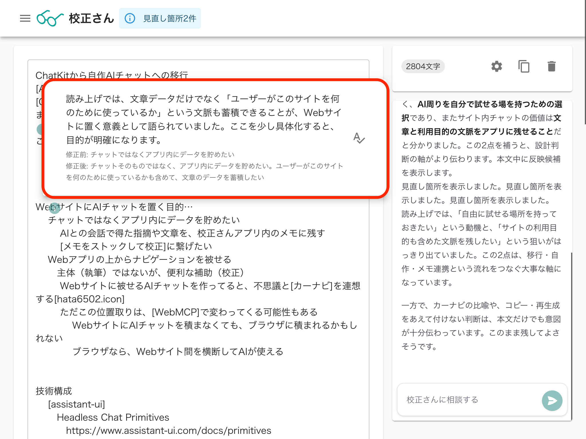
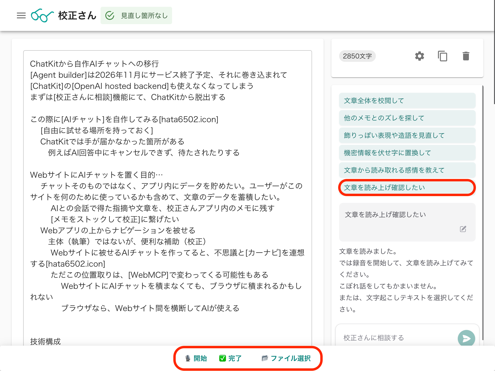

校正さんに「文章を読み上げ確認したい」機能を追加しました。
書いた文章を声に出して読み、途中で補足したくなったことも、そのまま話せます。読み上げが終わったら、話した内容をもとに文章を見直します。
読み上げると、つい説明を足したくなる
文章を書いているときは気にならなかったのに、声に出してみると「この説明が抜けていた」「ここは言い直したい」と思うことがあります。
たとえば、小説の一場面にこう書いたとします。
彼女は、届いた手紙を引き出しにしまった。
読み上げているうちに、書いている本人から、こんな補足が出てくるかもしれません。
大事な手紙だから、落ち着いて一人で読みたいんです。手紙を大切に思っていることは伝えたいけれど、その理由までここで説明するかは迷っています。
手紙をしまった理由も、読者にどこまで伝えたいかも、原文には書かれていません。書いている本人の頭の中にはあって、読み上げたときに言葉になったことです。
こうして出てきた補足を、本文に書き足すか、あえて読者の想像に委ねるかも含めて、文章の見直しに使えないかと考えました。
文字起こし − 文章 ＝ 行間
文字起こしを使って、何を見たいのか。その答えの一つが、読み上げた文章との差でした。
原文を読みながら足した説明、途中で訂正したこと、つい話してしまった本音。そこには、書いた本人には分かっていて、まだ文章にはなっていなかったことが含まれています。
校正さんは、見つかった重要な補足や本音について一言コメントし、文章への追加や修正を提案します。


本文に入れない話も、相談には使える
話したことを、全部本文に入れる必要はありません。
先ほどの例なら、「大事な手紙だから、一人で読みたい」と本文に書くこともできます。封筒を丁寧に扱うしぐさを足して、大切に思っていることを伝える方法もありそうです。
どこまで説明するか迷っていることも、校正さんに伝わっています。「理由はまだ明かさずに、手紙を大切にしていることが伝わる書き方を考えたい」と、続けて相談できます。
読み上げ中に出てきた言葉を、文章への追記にも、その後の相談にも使いたいと思っています。
プロンプトには、次の方針を入れています。
実際の発言から補足や訂正を拾い、話していない意図や感情は補わない。
本人が話したことを手がかりに、何を書き足すか、どんな言い方にするかを考えます。
使い方
「校正さんに相談」で「文章を読み上げ確認したい」を押すと、画面下部にボタンが表示されます。
「🎙️ 開始」を押して、文章を読み上げてください。途中で説明を足したり、こぼれ話をしたりしてもかまいません。「✅️ 完了」を押すと、文字起こしをもとに文章提案へ進みます。


別のアプリで文字起こししたテキストファイルも、「📂 ファイル選択」から読み込めます。音声認識が使えないブラウザでも、ファイルから入力できます。誤認識があったときは、後からチャットで訂正してください。
文章を声に出すだけでも、気づくことがあります。そのときに出てきた言葉も残して、文章を見直す材料にしてみてください。